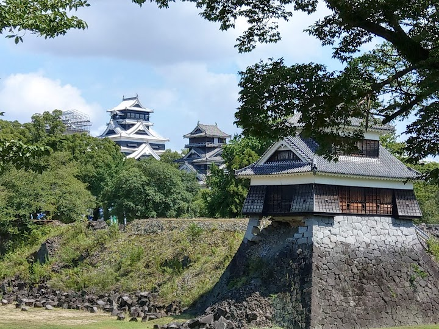
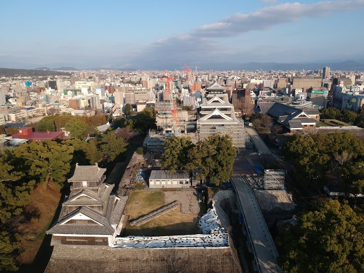
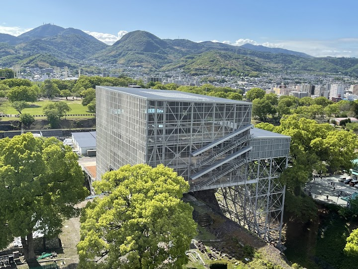
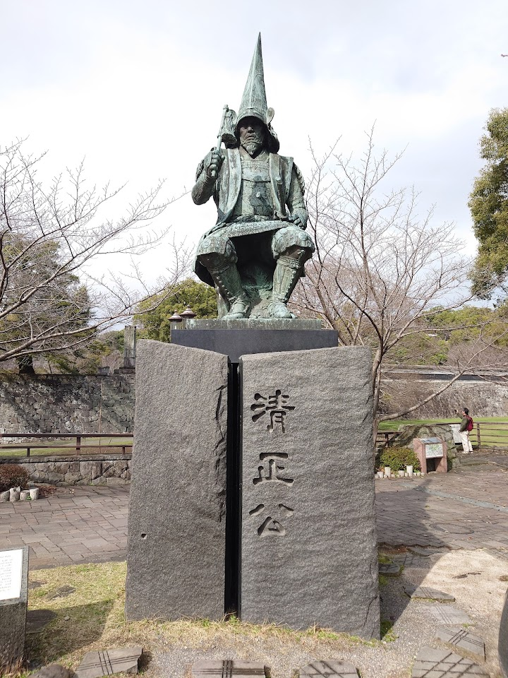
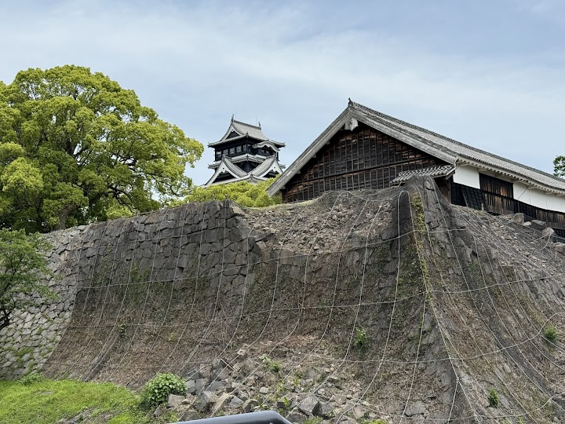

Kumamoto Castle
This reconstructed castle, originally completed in 1607, sits atop a hill & houses a history museum.
Open in Google Maps (street view, more photos and reviews there)






Visitor tips on finding it and getting there
Beautiful castle, reconstructed after an earthquake that hit several years ago (gardens are still under reconstrution, therefore a few minutes walk through a special pathway to the castle to be expected, as well as limitations to how many entrance gates is possible to use on regular day vs. Sunday/holiday). This is the most accessible castle we ever visited in Japan (for wheelchairs, baby strollers) as you can use elevators outside as well as inside of the castle. The castle itself can be considered a museum with great views from its top floor. Also, it has very cute souvenirs, not to be misse
I went to Kumamoto Castle with my friends, and it was honestly such a cool experience. I didn’t expect to enjoy it this much, but the castle looks super impressive in real life. The huge stone walls and the black main tower make it look really powerful. Inside, it’s actually very modern and easy to understand. The exhibits explain the history in a simple way, so it didn’t feel boring at all. Learning about the 2016 earthquake and how they rebuilt the castle made me respect the place even more. Climbing to the top was my favorite part. The view of the city is amazing, and of course we took a